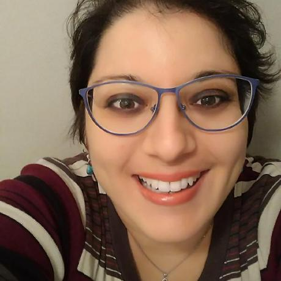

Last year, the R Consortium had a conversation with Amal Tlili, the co-organizer of the Tunis R User Group, regarding the Use of R for Marketing and CRM in Tunisia. This year, Amal Boukteb and Hedia Tnani spoke to the R Consortium about the use of R for bioinformatics research in Tunisia and discussed the group’s efforts to bridge the gap between academia and industry. The Tunis R User Group hosts engaging virtual events to connect R enthusiasts across the MENA region and Worldwide. Their events promote the use of R and foster knowledge and skill development in data science and bioinformatics.

Amal Boukteb is a PhD student at the National Institute for Agricultural Research of Tunisia (INRAT). She holds master’s degrees in Molecular Genetics and Biostatistics. Her PhD project focuses on Orobanche foetida, a parasitic plant threatening faba bean crops. She analyzed O_. foetida_ genetic diversity in Tunisia with RADseq and studied faba bean gene expression during this parasitic plant attack using RNA-seq. With a passion for integrating bioinformatics and Plant biology, Amal is determined to make significant contributions to the implementation of sustainable agricultural practices.

Dr. Hedia Tnani is a Staff Scientist at Lieber Institute for Brain Development (LIBD). She did a PhD in molecular biology and genetics. Her current work focuses on addressing the complex challenge of RNA degradation in postmortem brain tissue samples. She’s also the co-founder of R-Ladies Tunis and Tunis R User Group. Through the Tunis R User Group, she wants to democratize bioinformatics and data science.
Hédia and Amal met during the Bioinformatics and Genome Analyses course at Pasteur Institute of Tunis in 2017. Amal joined Tunis R User Group as a Bioinformatics Event Organizer
in 2023. With a deep commitment to inclusivity and empowerment, they’ve dedicated themselves to breaking down barriers faced by women and individuals from low-income countries when accessing education in these cutting-edge areas. By organizing workshops tailored to these communities, they aim to provide valuable skills and knowledge and foster a more diverse and equitable future in the bioinformatics field.
Please share about your background and involvement with the RUGS group.
Amal: We are biologists, and our academic curriculum did not include any programming courses. However, with the advancement of sequencing technologies, biologists are now facing the challenge of analyzing vast amounts of genomic data. This is a significant challenge for us. For my PhD project, I was involved in RNA-Seq and RAD-Seq projects. To overcome this challenge, I attended a course on analyzing genomic data using Unix, where I met Hedia for the first time. Additionally, in the framework of my thesis project, I had the opportunity to visit the Plant Immunity Group at RIKEN Yokohama in Japan for an internship. While there, I learned a lot from the talented scientists and their exciting research in bioinformatics.
When it comes to learning R programming for biologists, no specific courses are available. The only courses that exist are general ones. So, to overcome this gap, I started learning by myself. I attempted to understand the concepts by reading through error messages, package tutorials, and watching YouTube tutorials.
We realized we faced the same challenge after discussing this issue with our colleagues. We have genomic data that we need to analyze, but the available courses are located outside of Tunisia, primarily in Europe. Unfortunately, we lack the financial support to attend these courses. Additionally, obtaining a student visa for a temporary stay to attend such courses is a complex process. This challenge is not only unique to Tunisians but also a struggle for Africans and many biologists from middle and low-income countries. Our Tunis R user group aims to help others overcome this challenge and bridge this gap.
Hedia: I studied agronomy first and then pursued a master’s degree in plant breeding from Spain. Later, I completed my PhD in genetics. I did not know programming or R during my studies in Tunisia and Spain. However, when I started my postdoc at the International Rice Research Institute (IRRI) in the Philippines, especially when I first faced analyzing genomics data, I felt out of my depth. With no programming experience, learning R seemed like a mountain too steep to climb. This is a familiar story for many biologists transitioning from wet to dry labs, where code replaces beakers. Despite the daunting challenge, I persevered and taught myself R; eventually, it became an invaluable tool for my research. I’m also thankful to the great mentors I had at IRRI who helped me accelerate my learning curve. My journey wasn’t easy, but it was incredibly rewarding.
Learning bioinformatics can be challenging, especially in regions like Tunisia where resources are scarce and training abroad is so costly. Moreover, the need for bioinformatics training to solve biological problems has left many highly skilled biologists struggling to find a job in their field. Recognizing these obstacles, we formed a supportive community to facilitate collective learning and growth in bioinformatics and related fields such as data science and artificial intelligence.
Our community is a friendly, inclusive, and welcoming space for anyone passionate about bioinformatics, data science, artificial intelligence, and beyond. We’re all about growing together and learning from each other in a supportive environment. Whether you’re just starting out or have lots of experience, we encourage you to dive in, ask questions, and share your insights. We all rise by lifting others. Don’t worry about asking the “wrong” question. Every question is a chance to understand and learn something new. Come join us and be part of our journey of discovery and growth. We can’t wait to learn with you!
Can you share what the R community is like in Tunisia?
Hedia: In Tunisia, programming is mainly used in the industry, but it is not widely taught in the curriculum for biologists. This creates a gap between what is taught in the academic courses and what is required in the industry. As a result, individuals are expected to possess programming skills when they work in the industry. Still, they may not have been able to learn programming during their academic courses. This gap must be addressed to better prepare individuals for the job market.

Can you please update us about the group’s recent activities?
Amal: First, it is important to mention that Arabic is our native language in Tunisia. However, French is the predominant teaching language in many subjects, including biology and informatics. Despite this, we have decided to conduct our workshop in English for the Tunis user group for two main reasons. Firstly, we aim to bridge the gap between the academic skills acquired in French and English resources. Secondly, by using English as our teaching language, we can reach a broader audience of scientists who share our needs.
We decided to allow us the flexibility to choose speakers without language barriers. Our main goal is to reach a broad audience worldwide. During our workshop, we noticed participants worldwide, not just Tunisians. This is very important to us. We conducted workshops for biologists, such as the Genome-Wide Association Studies (GWAS) workshop, and we already have 5k views on our YouTube channel. It is interesting to see that people are very interested in our workshops. We also had the opportunity to collaborate with highly qualified researchers in their respective fields. Within our community, we were privileged to learn from Pr. Emerson Del Ponte generously shared his expertise using R for Plant Disease Epidemiology.
We aim not only to cover biological subjects but also those related to artificial intelligence. Recently, we conducted two successful workshops on Building a Chatbot with OpenAI, Shiny and R, and Bioinformatics Analysis using Chatlize and ChatGPT. We strive to have a balance between biological and AI-related subjects to make the experience easier for our participants with the help of artificial intelligence.
What trends do you currently see in R language?
Hedia: In bioinformatics, there is a growing trend towards single-cell and spatial transcriptomics. Our latest event was an introduction to single-cell RNA-seq analysis. Additionally, packages based on OpenAI API are increasingly being used. For instance, many of those packages can be used by people who lack coding skills. This is particularly helpful because not all biologists possess coding skills, and it makes their work easier. Another trend we have noticed is using Quarto instead of R Markdown. Shiny is also gaining popularity in this field.
We have been receiving a lot of queries about bioinformatics workshops lately, particularly because they offer a diverse range of events, such as user groups. However, it can be challenging to find a specific topic. For instance, some R user groups may only hold one or two events yearly, whereas we host monthly bioinformatics events.
We value feedback from our attendees and gather suggestions from our latest events to improve our upcoming ones. Our events are designed to stay current with trends in the industry, and we often invite guest speakers to talk about relevant topics. For instance, during one of our workshops about Building a Chatbot with OpenAI, we had 200 participants whom we taught how to use R and create their chatbots. We learn from our experiences, and when we notice an interest in a particular area, we look to bring in speakers to teach on that subject.
Any techniques you recommend using for planning for or during the event? (Github, zoom, other) Can these techniques be used to make your group more inclusive to people that are unable to attend physical events in the future?
Hedia: Our organization had a sponsorship for our Zoom account, an important tool for hosting events. One of the features that we utilize is the captions option, which allows participants from all over the world to have captions in their language and helps them follow the workshop. This is particularly helpful for those who may have difficulty understanding English. We are very grateful to Appsilon for their sponsorship of our Zoom account.
Amal: Thanks to Appsilon’s sponsorship, we have accepted more participants for our events. Previously, the number of participants was limited due to the capacity of our Zoom account. However, with this sponsorship, we can now handle up to 100 participants per event. This has made it easier for us to accept more subscribers and host successful workshops. We recently had an event with over 200 participants, which was a great success.
Hedia: We provide teaching materials for our speaker sessions on GitHub. You can find all the materials on YouTube and use them to reproduce what the speaker did during their session. We are always open to questions, especially if you encounter bugs while trying to reproduce the speaker’s work. Recently, we received an email from a participant experiencing a bug, and we had a great time figuring it out together. If you have any questions or problems, feel free to ask us for help, and we’ll do our best to assist you.
Are your events online, in-person, or hybrid?
Hedia: We are considering organizing hybrid events in the future, and we are searching for funding. We only have sponsorship for our Zoom, so we need additional funds to make this happen. We plan to organize events at multiple universities across the MENA region so important speakers can be followed in person and online. Amal, who is based in Tunis, has been in contact with many universities and academic professionals in the area. We’re currently exploring the best ways to make these hybrid events a reality, ensuring a seamless and enriching experience for everyone involved. Our goal is to make these events as engaging and accessible as possible, fostering a true sense of community.
We want to organize events for online events and to provide something valuable to our community. When we meet in person, we can better understand their needs and challenges, which helps us to build and organize workshops that cater to their specific needs. Recently, Amal mentioned that some courses are not free in Tunisia, which can be a barrier for some people. Therefore, we aim to organize a free hybrid event for everyone who wants to join and learn with us. We hope to get funding for this initiative to provide this opportunity to all.
Please share about a project you are currently working on or have worked on in the past using the R language. Goal/reason, result, anything interesting, especially related to the industry you work in?
Amal: For my PhD project, I conducted research on population genomics and RNA-seq to investigate the interaction between plants and parasitic plants. Our work shed light on the genetic diversity of Orobanche foetida, a parasitic plant posing a significant threat to faba beans in Tunisia. Additionally, through RNA-seq analysis, we identified a potential target gene for developing resistant varieties of faba beans against this parasitic plant. Furthermore, I recently completed a bachelor’s degree in biostatistics, specifically focusing on Aphid diversity in Tunisia.
During my academic journey, R has been my primary tool for conducting comprehensive data analysis across all my research projects. After finishing my PhD, I aim to develop my expertise in bioinformatics further, specifically focusing on wheat genomics.
Hedia: I primarily use R as the main software for all my research projects. I am currently working on maintaining and improving a package called qsvaR. qsvaR is a tool that generates quality surrogate variable analysis for degradation correction in RNA cells. It contains functions that help remove the degradation effect in post-mortem brain tissue, making it a useful tool for generating basic data. We are currently working on a publication based on this work.
How do I Join?
R Consortium’s R User Group and Small Conference Support Program (RUGS) provides grants to help R groups organize, share information, and support each other worldwide. We have given grants over the past four years, encompassing over 68,000 members in 33 countries. We would like to include you! Cash grants and meetup.com accounts are awarded based on the intended use of the funds and the amount of money available to distribute.